诗人趣事
今天我们说的这个诗人，他没有李白、杜甫、白居易名声那么大，这个诗人的名字叫李涉。李涉大家可能不太知道他，但是他在中唐的时候，也是一个相当有名的诗人。有一次，李射旅行路过一个地方，这个地方叫做井阑沙，也就是如今的安徽省安庆市西南方的一个小镇叫皖口镇，在那个地方，在长江边上，是个小村庄。那么他在井阑沙写了一首诗，这首诗写的什么呢？先看第一句，他说：“暮雨萧萧江上村，”意思是到了黄昏时候下细雨，走到江边上一个很荒凉的村庄。本就是黄昏时候，再加上下雨就更没有人了，很荒凉。第二句；“绿林豪客夜知闻。”意思就是突然来了一个人挡了他的去路，是谁呢，是一个强盗，绿林豪客也就是绿林好汉来了。第三句第四句等会再讲，所以他写了这样一首诗，这首诗说什么呢。原来是说了这样一件事情：就是李涉带了一个书童一起路过那里，正想投宿，船还没靠，突然被一个强盗挡住了，强盗挡住，强盗说：“来者何人，留下买路钱。”这时候李涉的书童就对强盗说：”这是李涉先生。” 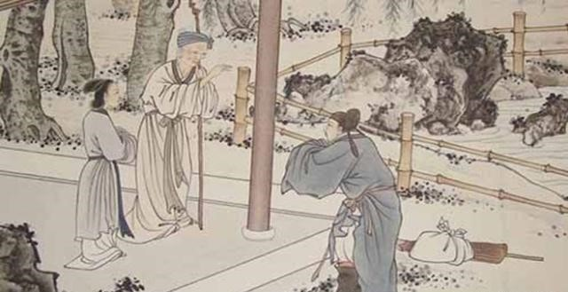 强盗一听说是李涉，就说：”是诗人，写诗的李涉吗？久闻大名，久闻大名。”继续说到：既然你是李涉，我知道你是有名的诗人，这下我就不抢你的东西了，你也不要给我买路钱了，你写一首诗送给我就行了。“ 于是李涉就写了这首诗。
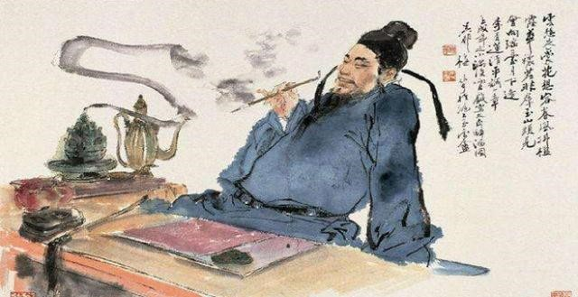再来看看后面两句，”他时不用逃名姓，世上如今半是君。“ 意思就是他年我也不用隐姓埋名了，因为现在这个世界上，一半人是跟你一样，当时天下已经不大太平了，强盗很多，到哪都能碰到这种人，所以无所谓了。那么这首诗他写完以后，送个这个强盗，这个强盗看了很高兴，结果就是不但没有要他的钱财，自己还送了一些东西给李涉，以表自己的尊敬。
从这个例子也能看出，唐代的社会，上上下下都崇尚诗歌，都喜欢诗歌，都懂得诗歌的价值，或者都尊敬诗人。它已经到了强盗这个层次，强盗都喜欢诗歌，都懂得诗歌的价值。所以，可以这样说，唐朝全社会从上到下都有崇尚诗歌的风气，很多有才华的人都把他的才华用在写诗歌方面，所以，唐诗要不好也难。
君臣趣事
物以稀为贵，当时菜场上的菠菜价格非常昂贵，一般人仅止于欣赏，根本买不起。魏征也极爱吃菠菜。后来，这对君臣之间还发生了一件和菠菜有关的趣事。 魏征为人耿直，经常当众指出唐太宗执政中的诸多不足,有时候不免让李世民感到头疼。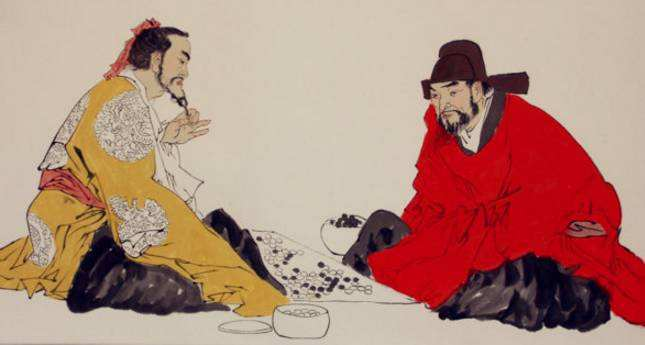
一天，李世民问其他大臣:“我怎么才能杀掉这个乡巴佬?”长孙无忌当然理解皇上的意思，说:“陛下说的不是真杀魏征,而是挫挫他的锐气吧？……”太宗问：“你说怎么办？”长孙无忌建议太宗请魏征吃菠菜。 于是，李世民邀请众臣聚会。魏征刚坐下，就被桌上新鲜的菠菜吸引住了,垂涎欲滴，正要大快朵颐，此时的李世民却故意问:“魏爱卿,今天难得有这个机会咱们君臣休闲聚餐，说说心里话吧，我知道你平时对我有意见，今天，允许你畅所欲言，免得以后再让我难堪。”魏征眼巴巴的瞅着那盘菜，直咽口水，他心不在焉的把一些旧题简单重复了几句，但很快被太宗驳回:“魏征,你今天能说点儿新鲜的吗?”魏征脱口而出:“这菠菜倒挺新鲜的……”发现失言后,魏征又说:“这菠菜实在是…”
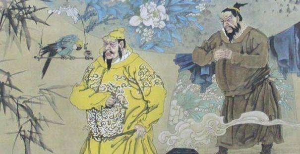太宗说:“原来今天的菜不合魏征口味啊!来人,把菜撤下!”一听菠菜要被撤走，魏征赶紧拦住说:“不要撤，不要撤！臣最爱吃菠菜了…”一代名相，为一盘菠菜折腰，猴急猴急的样子让众人忍俊不已，高级官员的形象荡然无存。 见目的已经达到，太宗微微一笑，说不议政事了，都好好吃饭吧。魏征终于如愿的吃上了心爱的菠菜。当然，以后的魏征收敛了许多。太宗用一盘菠菜，稳稳妥妥的平衡了君臣之间的关系。
女帝禁屠
不少人颇有佛缘，女皇武则天便是其中一位。武则天推崇佛教的目的，是想把佛教当作自己登上权力顶峰的思想武器。她一当上皇帝，便宣布“释教开革命之阶，升于道教之上”。除划拨专款大修寺庙，大造佛像，大量翻译佛经外，还多次用行政手段掀起全民崇佛的热潮。在强制性的全民崇佛运动中，有一道禁杀牲畜、禁捕鱼虾的命令，曾闹出了不少趣闻。
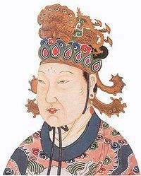不杀生是佛教五戒之一，是佛门弟子基本的行为准则。但不准普通老百姓吃肉，实施起来无疑有很大难度。为了查验禁屠令的执行效果，武则天特命宰相娄师德下基层巡视。宰相视察工作，基层官吏自然要设宴接待。宴席上，首先送上来的是一盆羊肉。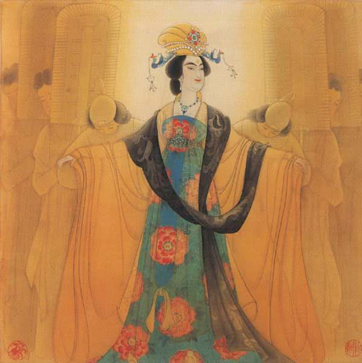基层官吏解释说:这羊不是我们杀的，是狼咬死的。既然是狼咬死的，吃了当然不算犯禁。接着送上来的是一盘鱼。基层官吏又声明:这鱼也是狼咬死的。娄师德一听喷饭大笑:你咋这么笨呢，应该说这鱼是水獭咬死的才对。欢笑声中，美味佳肴很快成了腹中之物。由于“上有政策，下有对策”，武则天的禁屠令在基层的执行状况估计不会太理想。事实上，古往今来的任何一项政令，如果不得人心，最终结局必定是草草收场。后来，武则天大约也觉得这个禁令有点过分，因而在处理违禁案例时，对当事人十分宽容。左拾遗张德的妻子生了一个男孩，便偷偷地杀了一头羊宴请宾客。其中有个叫杜肃的人，饱吃一顿羊肉之后，居然写了一纸状文向皇帝告发张德。
第二天上朝时，武则天对张德说:“你妻子生了一个男孩，可喜可贺啊。”张德向武则天拜谢。武则天又道:“可是羊肉从哪里弄到的呢?”张德赶紧叩头连称死罪。武则天道:“我禁止宰杀牲畜，是吉是凶难以预测。可是你邀请客人，也该有选择地交往。无赖之人，不能一起聚会。”然后拿出杜肃的状文给他看。杜肃卖友求功不成，反遭奚落，吓得直冒冷汗。武则天显然认为杜肃出卖朋友事大，而张德违犯禁屠令事小。由此可见，连武则天自己后来都不把禁屠令当回事了。
大唐服饰
唐代是我国封建社会的鼎盛时期，经济兴旺、社会生活富裕，民族交融，中外贸易与文化往来频繁。反映在服饰上也丰富多彩，盛况空前，不仅继承和发展本民族的传统，还大量吸收外来服饰形式。我们先来看看一张唐朝女子的服饰 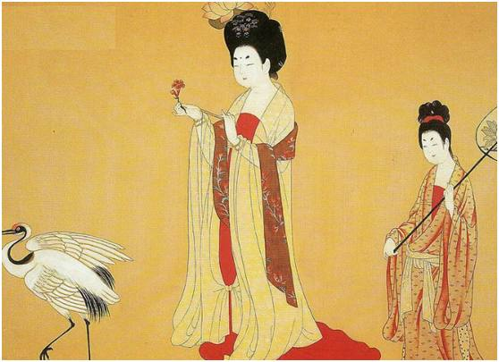处于中国鼎盛时期的唐朝，服饰空前繁荣，成为中国服饰史上最最精彩的篇章，其服饰色彩之华丽，装饰之纷呈，款式造型之开放，做工之考究。服饰图案之精美是现代人所为之感叹的。有服饰专家认为：“唐代是中国文化登峰造极的时候，制度具备，文化璨然”。范冰冰曾出演电视剧《武媚娘传奇》，对于范冰冰在举重的扮相可以说是非常漂亮，华美。
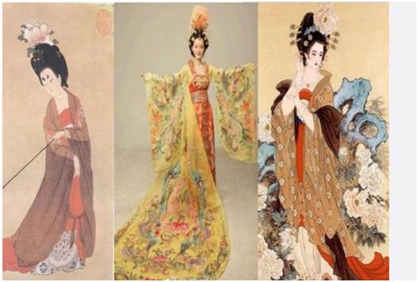但是当时曾因为服饰原因停播。据说是因为片中女子身着的“坦胸露乳”的服饰引发了争议。但是唐朝的衣服真的是这样的吗？如此开放？一古代服饰研究者告诉早报记者：“唐代女装的基本穿着是三件套：裙、衫、帔。而《武媚娘传奇》剧中主角的衣服和唐朝一点关系也没有，只有宫女之类的服饰，稍许有些唐朝服饰的影子在。此外，初唐服饰较为紧致，形象也以清瘦为主，中晚唐开始往丰满宽大的风格发展”
但是也有人也这样说：唐代女装的特点是裙、衫、帔的统一唐代妇女服饰。在妇女中间，出现了坦胸露乳的形象。在永泰公主墓东壁壁画上，有一个梳高髻、露胸、肩披红帛，上着黄色窄袖短衫、下著绿色曳地长裙、腰垂红色腰带的唐代妇女形象，从而对“粉胸半掩疑暗雪”，“坐时衣带萦纤草，行即裙裾扫落梅”有了更形象的理解。其实唐代服饰，特别是女子装束，不光为当时人们所崇尚，甚至于今日人们观赏唐代服饰，亦觉兴奋异常。没有矫揉造作之态，也没有扭捏矜持之姿。展现在人们面前的，是充满朝气，令人振奋又使人心醉的服饰。其色彩也非浓艳不取，各种鲜丽的颜色争相媲美，不甘疏落寂寞，再加上金银杂之，愈显炫人眼目。其装饰图案，无不鸟兽成双，花团锦簇，祥光四射，生趣盎然，真可谓一派大唐盛景。
以胖为美
人们印象中的唐朝以胖为美，而杨贵妃则是这美中的典型。历史上的杨贵妃，有倾国倾城之姿色，婀娜舞姿，是出色的音乐家和舞蹈家。也正是因为她对于音律的精通，才使得她与唐玄宗有更多的共同话题，更多相同的兴趣爱好。而杨贵妃也以一曲《霓裳羽衣曲》惊艳四座，成为大唐第一美人。那么唐朝真的是崇尚肥与胖，以胖为美吗？并不是！白居易的诗中写道：“杨柳小蛮腰”，而不是水桶腰，也就说明了，唐朝的审美并不是崇尚胖。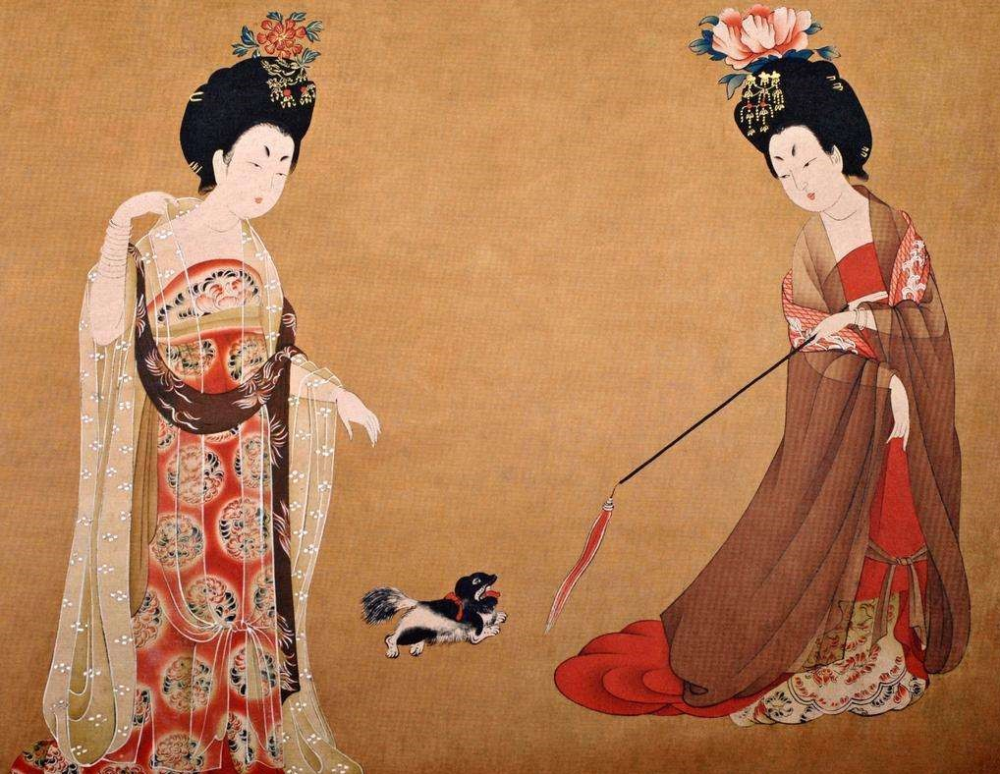杨贵妃其真实身高165.体重为68KG，就算以现代标准来看，也绝不是一位肥又胖的人，最多只能算是丰腴。而人们对于唐朝以肥与胖为美的误解也是源于唐朝的绘画像中的女子大多都是胖的，唐朝绘画中的女子也确实是画得胖，但这并不是因为女子是真的胖。唐朝的绘画多以写意为主，在食物匮乏的古代，胖是生活优越的表现，越胖就越说明财大气粗。所以，唐朝并不是以胖为美，而是以胖为尊。其实并不仅仅只是中国古代，我们如今见到的欧洲近代绘画中的人物也是画得胖，看起来就一副非常有钱，非常贵气的样子，所以，绘画中的胖，并不代表是真的胖，而是丰腴。
其次，我们熟知大唐朝鼎盛时社会的风气开放，流行丰满的胸部，穿的也是齐胸襦裙装，除了胸以外没有显示身材的地方，所以当时的女性在胸部也是下足了功夫。这种裙装分两种，但是普遍是对襟的齐胸襦裙范围更加广泛一些。再加之，关中人脸盘比较大，所以也显得人更加肥胖，好像襦裙下藏了个大水桶腰似的，其实呢，襦裙下藏的是小蛮腰。另外，唐朝绘画中的女子也并不是整个唐朝时期都是画得胖，在初唐时期，女子就画的不胖，而仅仅只是在盛唐时期的女子画得较为丰腴。所以也就导致了人们都误以为唐朝是一个以胖与肥为美的朝代。
另外，盛唐时期已经开始流入胡人的东西，古时称呼的胡人也就是如今的北方的小伙伴们，而北方胡人大多是游牧民族，身高体壮，在身高方面中原人当然不能与之相论。当时注重外交的皇帝，也鼓励人们多接触新事物，民风开化，在人们的饮食上，审美上等等各方面均也受胡人影响，胡化明显，胡人胖，所以唐朝人就跟风了，所以画像也多画得胖。
婚姻习俗
唐朝时期的婚礼仪式是很有趣的，其中包含了十分浓重的民俗文化。唐朝的婚礼制度沿袭了北朝的方式，要进行六道程序：采纳、问名、纳吉、纳征、请期、亲迎。
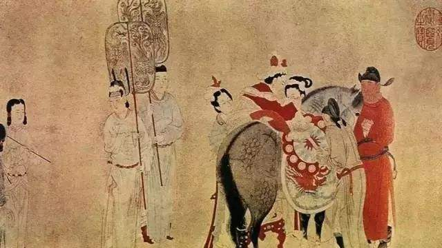迎亲时，夫家人士在新郎的带领下来到新娘家门前，齐声高喊“新妇子”。而这个时候新娘家的大门往往是紧闭着的，意思是要给新郎点颜色瞧瞧，新娘子是不好娶的。 唐朝时期这种围在新娘子家外面叫喊的方式叫“催妆”，唐朝时期迎亲的时候往往是选择黄昏，中唐后人们才渐渐将迎亲的时间改到了清晨。在接完新娘子后事情还没有完，女方常常会集结很多人拦在路上，不让新郎的队伍过去。要是想过去就必须要留下买路财，乍一看有些像强盗，不过这是唐朝时期娶亲的一个程序叫“障车”。
结婚之前，男子还需要用三升粟米来填满石臼。再用一张席子盖住井口，再准备三斤以枲麻塞到窗户上，再讲三支箭矢放在新房门口。在新郎官接到新娘子上车时，新娘子挡上膝盖搭上盖头。在新娘子上车后，男子需要骑马绕车三圈。迎娶到婆家后，新娘子要先拜灶台，以示将来成为操持家务的好手。 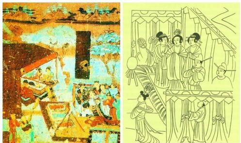男方的父母等亲属则从便门出，然后再从正门入，为的是踩新娘子的脚印，以沾喜运。 在唐朝，人们结婚大都选择春夏之际；如果是选择寒冬腊月结婚就会另有新的说法。在结婚当天，新人不能入住新房，需要在屋外用青布幔搭建帐篷，称之为“青庐”，于是新人就必须在这里行拜礼并度过新婚第一夜。
在这个帐篷中，新人还要互相剪掉对方一缕头发放在锦囊中，以表示成为结发夫妻的意思。更为有意思的是在男子回门拜见岳父岳母大人时，姑娘们会用木杖、竹杖打女婿为乐，直到女婿被揍得晕头转向才罢休。这也是唐朝新婚中的一个嬉闹游戏罢。